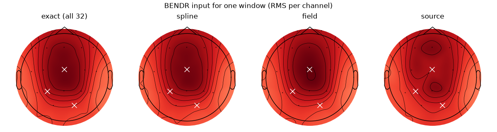
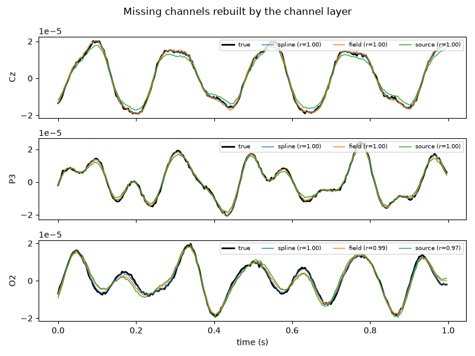

Note
Go to the end to download the full example code.
Running a Pretrained Model on Any Channel Set with the Channel Layer#
Pretrained EEG foundation models expect the channel montage they were
trained on. BENDR, for example, was
pre-trained on 19 channels of the 10-20 system plus SCALE, a
relative-amplitude channel. A recording with other channels cannot go
straight into the checkpoint.
The channel layer (ChannelLayer) sits inside the
model and maps the montage of your recording onto the one the backbone
expects. You choose how with channel_strategy:
"exact"copies channels by name and refuses to invent any;"spline"fills missing channels with a regularised spherical spline;"field"uses MNE’s minimum-norm field mapping;"source"estimates sources in a spherical head model and projects them back onto the missing electrodes.
This example builds a synthetic 32-channel recording (no download), runs BENDR with each strategy, and plots the 19 BENDR channels the layer reconstructs for one window when three of them are missing from the recording.
Warning
The channel layer is experimental; its API may change without a deprecation cycle.
# Authors: Bruno Aristimunha <b.aristimunha@gmail.com>
#
# License: BSD (3-clause)
import matplotlib.pyplot as plt
import mne
import numpy as np
import torch
from braindecode.models import BENDR
from braindecode.models.bendr import _BENDR_TARGET_CHS_INFO
torch.manual_seed(0)
rng = np.random.default_rng(0)
A synthetic 32-channel recording#
We place 32 channels of the standard_1020 montage and fill them with
spatially smooth activity: a few broad scalp fields (low-order functions
of the electrode position), each with its own oscillation, plus a little
sensor noise. Smooth fields are what EEG looks like at the scalp, so the
strategies have something to reconstruct.
ch_names = [
"Fp1", "Fp2", "AF3", "AF4", "F7", "F3", "Fz", "F4", "F8", "FC5", "FC1",
"FC2", "FC6", "T7", "C3", "Cz", "C4", "T8", "CP5", "CP1", "CP2", "CP6",
"P7", "P3", "Pz", "P4", "P8", "PO3", "PO4", "O1", "Oz", "O2",
] # fmt: skip
sfreq = 256.0
n_times = 4 * int(sfreq)
montage = mne.channels.make_standard_montage("standard_1020")
info = mne.create_info(ch_names, sfreq=sfreq, ch_types="eeg")
info.set_montage(montage)
pos = np.array([info["chs"][i]["loc"][:3] for i in range(len(ch_names))])
times = np.arange(n_times) / sfreq
spatial = np.c_[pos, pos**2, pos[:, [0]] * pos[:, [1]]] / 0.08 # (32, 7)
freqs = rng.uniform(4.0, 14.0, spatial.shape[1])
temporal = np.sin(2 * np.pi * freqs[:, None] * times + rng.uniform(0, 6, (7, 1)))
data = spatial @ temporal + 0.05 * rng.standard_normal((len(ch_names), n_times))
raw = mne.io.RawArray(data * 1e-5, info, verbose="error")
print(raw)
/home/runner/work/braindecode/braindecode/examples/model_building/plot_channel_interpolation.py:71: FutureWarning: Montage name 'standard_1020' is deprecated and will be removed in MNE 1.14. Use 'colin27_1020' instead.
montage = mne.channels.make_standard_montage("standard_1020")
<RawArray | 32 x 1024 (4.0 s), ~297 KiB, data loaded>
One window, with three BENDR channels missing#
BENDR reads windows of n_times samples. We take the first 4-second
window and remove Cz, P3 and O2 from the recording, as if the
cap did not have them. We keep the true signals to compare against.
held_out = ["Cz", "P3", "O2"]
window = raw.get_data() # (32, 1024)
keep = [i for i, ch in enumerate(ch_names) if ch not in held_out]
chs_info = [raw.info["chs"][i] for i in keep]
x = torch.as_tensor(window[keep], dtype=torch.float32)[None] # (1, 29, 1024)
print("input:", tuple(x.shape))
input: (1, 29, 1024)
BENDR with each strategy#
channel_strategy is a constructor argument, like any other model
parameter, and is saved in the model config. The checkpoint weights do
not change: the strategies here have no parameters, so a model built with
any of them loads the released BENDR weights strictly
(BENDR.from_pretrained("braindecode/braindecode-bendr",
chs_info=chs_info, channel_strategy="source")).
To keep the example fast we build a small, randomly initialised BENDR; the channel layer is the same for the full model.
small = dict(encoder_h=64, contextualizer_hidden=128, transformer_layers=2)
try:
BENDR(chs_info=chs_info, n_outputs=2, n_times=n_times, channel_strategy="exact")
except ValueError as err:
print(f"exact: {err}")
strategies = ["spline", "field", "source"]
reconstructed = {}
for strategy in strategies:
model = BENDR(
chs_info=chs_info,
n_outputs=2,
n_times=n_times,
channel_strategy=strategy,
**small,
).eval()
with torch.no_grad():
x_backbone, observed = model.channel_layer(x) # what the backbone receives
out = model(x)
reconstructed[strategy] = x_backbone[0].numpy()
print(
f"{strategy:>6}: backbone input {tuple(x_backbone.shape)}, "
f"output {tuple(out.shape)}, "
f"observed {int(observed.sum())}/{len(observed)} channels"
)
exact: Strategy 'exact': target channels ['CZ', 'P3', 'O2'] are not in the input montage ['Fp1', 'Fp2', 'AF3', 'AF4', 'F7', 'F3', 'Fz', 'F4', 'F8', 'FC5', 'FC1', 'FC2', 'FC6', 'T7', 'C3', 'C4', 'T8', 'CP5', 'CP1', 'CP2', 'CP6', 'P7', 'Pz', 'P4', 'P8', 'PO3', 'PO4', 'O1', 'Oz']; use a reconstructing strategy (e.g. 'spline') or supply them.
/home/runner/work/braindecode/braindecode/braindecode/modules/channels.py:287: UserWarning: Target channels ['SCALE'] are not in the input montage and have no position to reconstruct them from; they are zero-filled.
self._use(chs_info) # surface montage errors at construction
spline: backbone input (1, 20, 1024), output (1, 2), observed 16/20 channels
field: backbone input (1, 20, 1024), output (1, 2), observed 16/20 channels
source: backbone input (1, 20, 1024), output (1, 2), observed 16/20 channels
With the full montage, exact is a plain reordering: the 19 EEG
channels are copied by name (T5/T6 are the old names of
P7/P8). SCALE is not an electrode: the layer leaves it at zero
and marks it observed=False (see the BENDR
docstring).
x_full = torch.as_tensor(window, dtype=torch.float32)[None]
model = BENDR(
chs_info=raw.info["chs"],
n_outputs=2,
n_times=n_times,
channel_strategy="exact",
**small,
).eval()
with torch.no_grad():
x_backbone, observed = model.channel_layer(x_full)
reconstructed["exact (all 32)"] = x_backbone[0].numpy()
print("exact, all 32 channels: observed", observed.tolist())
exact, all 32 channels: observed [True, True, True, True, True, True, True, True, True, True, True, True, True, True, True, True, True, True, True, False]
The reconstructed BENDR montage#
Each row of the figure is the 19-channel BENDR montage the backbone receives for this window, shown as the RMS over the window. The top row is the full recording copied exactly; the others are rebuilt from the 29 remaining channels. White crosses mark the three missing channels.
bendr_eeg = [ch for ch in _BENDR_TARGET_CHS_INFO if ch["ch_name"] != "SCALE"]
bendr_info = mne.create_info(
[ch["ch_name"] for ch in bendr_eeg], sfreq=sfreq, ch_types="eeg"
)
bendr_info.set_montage(
mne.channels.make_dig_montage(
{ch["ch_name"]: ch["loc"][:3] for ch in bendr_eeg}, coord_frame="head"
)
)
missing_mask = np.array([ch["ch_name"] in {"CZ", "P3", "O2"} for ch in bendr_eeg])
rows = ["exact (all 32)"] + strategies
rms = {k: np.sqrt((reconstructed[k][:19] ** 2).mean(axis=1)) for k in rows}
vmax = max(v.max() for v in rms.values())
fig, axes = plt.subplots(1, len(rows), figsize=(3 * len(rows), 3.2))
for ax, key in zip(axes, rows):
mne.viz.plot_topomap(
rms[key],
bendr_info,
axes=ax,
show=False,
vlim=(0, vmax),
mask=missing_mask,
mask_params=dict(marker="x", markeredgecolor="w", markersize=9),
)
ax.set_title(key)
fig.suptitle("BENDR input for one window (RMS per channel)")
fig.tight_layout()

How close are the missing channels?#
Because the synthetic field is known, we can compare each reconstructed channel with the signal it replaces. The fields here are low-order polynomials of position, which suits the spline by construction; on real EEG the ranking can differ, so treat the strategy as a hyper-parameter.
target_names = [ch["ch_name"].upper() for ch in bendr_eeg]
fig, axes = plt.subplots(len(held_out), 1, figsize=(8, 6), sharex=True)
t = times[: int(sfreq)] # first second
for ax, name in zip(axes, held_out):
k = target_names.index(name.upper())
truth = window[ch_names.index(name), : len(t)]
ax.plot(t, truth, color="k", lw=2, label="true")
for strategy in strategies:
rec = reconstructed[strategy][k, : len(t)]
r = np.corrcoef(truth, rec)[0, 1]
ax.plot(t, rec, lw=1, label=f"{strategy} (r={r:.2f})")
ax.set_ylabel(name)
ax.legend(loc="upper right", fontsize=7, ncol=4)
axes[-1].set_xlabel("time (s)")
fig.suptitle("Missing channels rebuilt by the channel layer")
fig.tight_layout()
plt.show()

Summary#
BENDR(chs_info=..., channel_strategy=...)runs the pretrained backbone on any montage; the default"native"keeps BENDR’s own behaviour and leaves the canonical montage untouched.exactnever invents data and fails when a channel is missing;spline,fieldandsourcereconstruct it from positions.model.channel_layer(x)returns what the backbone receives: the signal and which channels were measured (observed).
Total running time of the script: (0 minutes 1.433 seconds)
Run this example